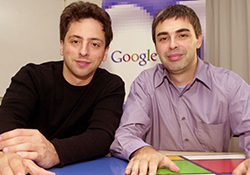
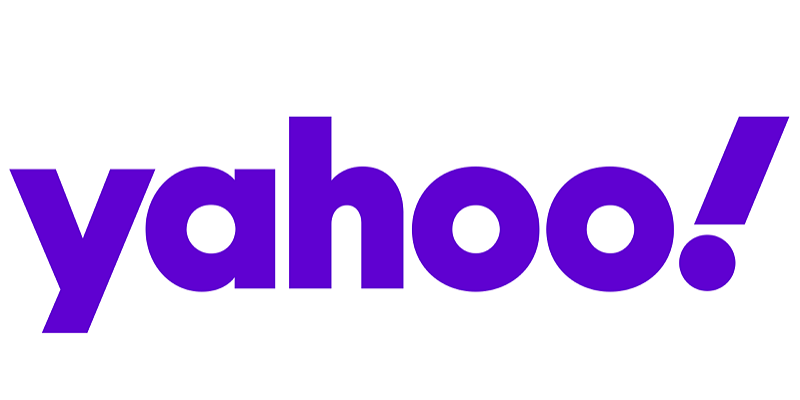
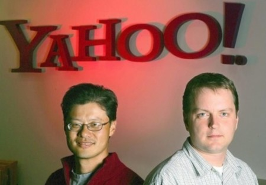
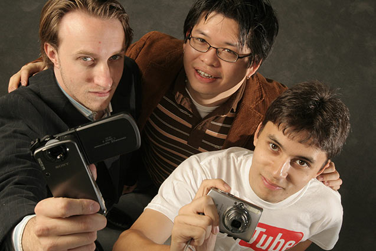

(LOGO-img)
FUNDACION


| EMPRESA (LOGO-img) |
CREADOR | FOTO | AÑO FUNDACION |
LINK |
|---|---|---|---|---|
| Steve Jobs | |
1976 | Click para dirigirse a la página de Apple | |
|
Mark Zuckerberg | |
2004 | Click para dirigirse a la página de Facebook |
|
Larry Page y Sergey Brin |  | 1998 | Click para dirigirse a la página de Google |
| Bill Gates | 1975 | Click para dirigirse a la página de Microsoft | ||
|
Jimmy Wales | 2001 | Click para dirigirse a la página de Wikipedia | |
|
Pierre Omidyar | 1995 | Click para dirigirse a la página de Ebay | |
| Reed Hastings | 1997 | Click para dirigirse a la página de Netflix | ||
|  | David Filo y Jerry Yang |  | 1995 | Click para dirigirse a la página de Yahoo |
|
Chad Hurley, Steve Chen and Jawed Karim |  | 2005 | Click para dirigirse a la página de Youtube |
| Kevin Systrom | 2010 | Click para dirigirse a la página de Instagram | ||
| Zhang Yiming | 2016 | Click para dirigirse a la página de Tiktok | ||
| Travis Kalanick | 2009 | Click para dirigirse a la página de Uber |